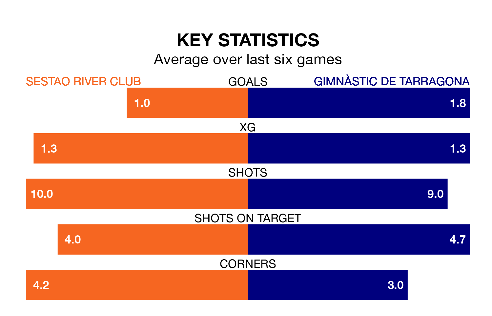

Mid-season relegation candidates Sestao River Club face a challenge against high-flying Gimnàstic de Tarragona at the Estadio Las Llanas on Sunday.
Sestao River Club are 18th in the Primera Division RFEF Group 1 table, and have picked up four wins and nine draws in their 23 games to date.
Gimnàstic de Tarragona, meanwhile, are top of the standings with 45 points, having won 13 and drawn six.
With 15 goals in 23 games so far this season, Sestao River Club are the league's second-lowest scorers with 0.7 goals per game. And they are conceding more than average, letting in 29 goals at a rate of 1.3 per game.
Gimnàstic de Tarragona, meanwhile, are above average scorers, with 1.3 goals per game, compared to a league average of 1.0. They have conceded 0.6 goals per game.
The home team are in disappointing form in Primera Division RFEF Group 1, with one win and three draws from their last six games.
With five wins and a draw over that period, the visitors' form is much better – they have taken 16 points from 18, compared to Sestao River Club's six.
Sestao River Club's last match was on February 11, a 3-1 loss against CF Fuenlabrada, with Jon Guruzeta getting the goal for Sestao River Club.
Gimnàstic de Tarragona beat Real Unión 2-1 last time out, on February 10, with Joan Oriol i Gràcia on the scoresheet.
Updated: 09:02 (UTC), 13/02/24